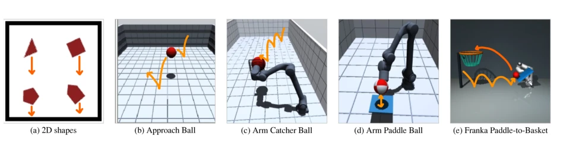
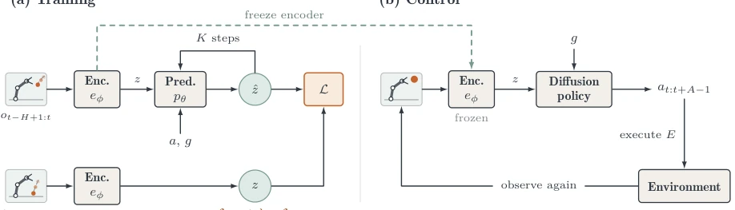
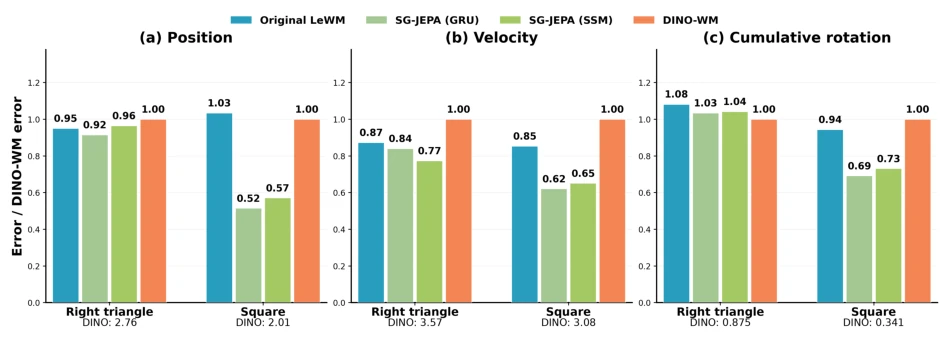
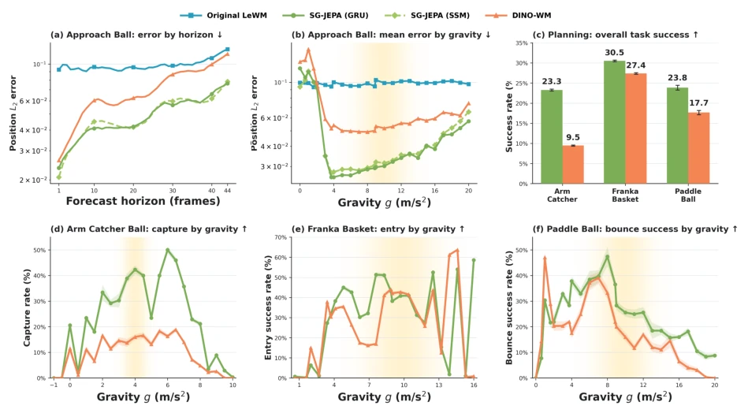
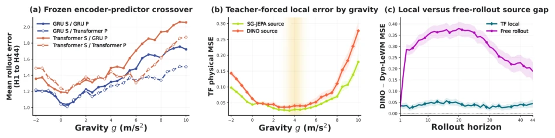
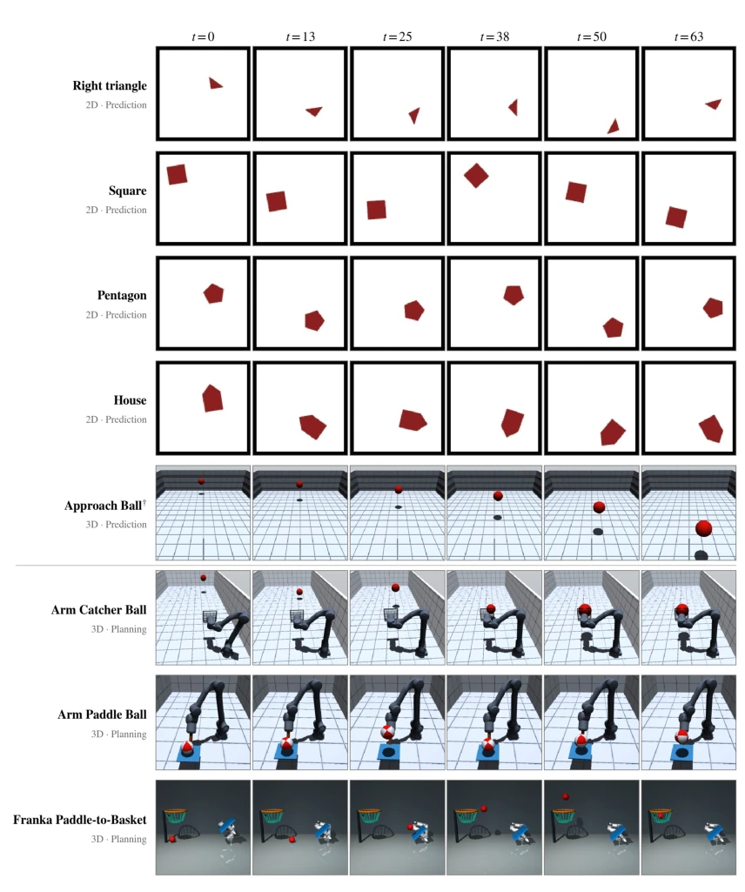
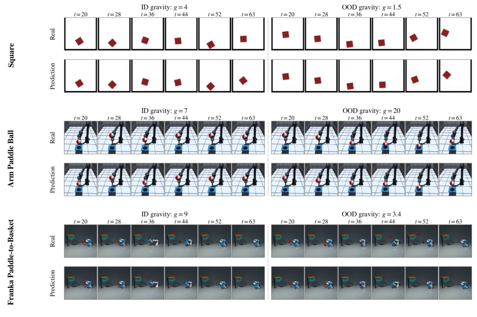
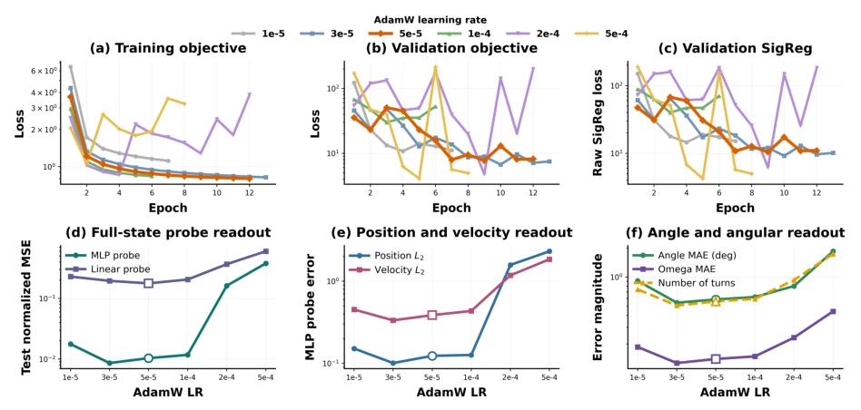
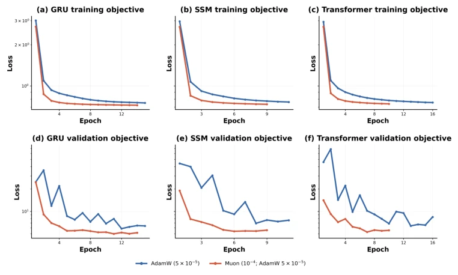
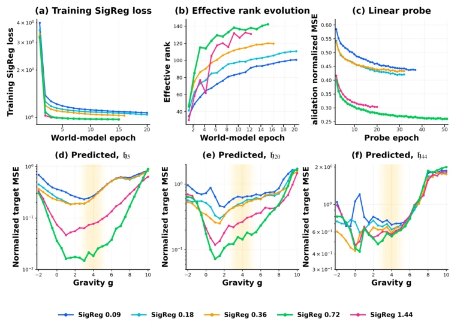

This paper adds a "gravity mod" to the JEPA family, attempting to solve the "poor adaptation" of world models in physical generalization. The authors replaced LeWM's predictor with one capable of recursive rollout and forcibly fed gravity parameters, resulting in indeed superior performance compared to DINO-WM and the original LeWM in MuJoCo. Most ironically, they went to great lengths to develop a Semigroup theory, only to find the main credit actually went to the encoder learning better features, while the predictor hardly changed. Although the results are good, only gravity scalars were tuned, shape generalization is still lacking; this "zero-shot physical generalization" sounds grand, but is actually limited to specific physical parameters. However, being able to clearly explain why long-horizon prediction does not collapse is still somewhat valuable. Additionally, the theoretical analysis reveals how recursive rollout amplifies encoder advantages, providing a new perspective for understanding JEPA's generalization mechanisms, although the nonlinear theory still has shortcomings.
研究动机Motivation
世界模型的核心目标是理解环境动态以便预测，但现有的 JEPA 架构（如 DINO-WM [Zhou et al., 2025] 和 LeWM [Maes et al., 2026]）主要验证了固定帧间转换律下的规划能力，并未真正测试其学习物理规律的能力。当模型面对分布外（OOD）的物理参数（如不同重力场）时，其长视界预测是否依然准确？如果模型只是记住了训练时的特定动力学，而非物理定律本身，就无法实现真正的零样本泛化。例如，在地球训练的模型能否适应火星环境？现有工作多关注像素重建或单步预测，忽略了递归 rollout 中误差累积对物理一致性的破坏。本文旨在探究模型是否真的学到了物理动态，而非仅仅是训练分布内的拟合。
The core goal of world models is to understand environmental dynamics for prediction, but existing JEPA architectures (such as DINO-WM [Zhou et al., 2025] and LeWM [Maes et al., 2026]) mainly verify planning capabilities under fixed inter-frame transition laws, without truly testing their ability to learn physical laws. When models face out-of-distribution (OOD) physical parameters (such as different gravity fields), is their long-horizon prediction still accurate? If models merely memorize specific dynamics during training rather than physical laws themselves, true zero-shot generalization cannot be achieved. For example, can a model trained on Earth adapt to the Martian environment? Existing works mostly focus on pixel reconstruction or single-step prediction, ignoring the damage caused by error accumulation in recursive rollout to physical consistency. This paper aims to investigate whether models have truly learned physical dynamics, rather than merely fitting within the training distribution.

Figure 2: Evaluation environments. (a) Planar shapes: each object is given an impulse at t = 0 and then fall and collide freely after inside the box. (b) Approach Ball: projectile flight from the far end of the scene. (c) Arm Catcher Ball: a robotic arm catches a ball with a catcher. (d) Arm Paddle Ball: the same arm sustaining bounces with a tilting paddle. (e) Franka Paddle-to-Basket: a Panda arm strikes an incoming ball into a basket. Orange arrows sketch the motion.
SG-JEPA is based on the LeWM architecture, containing an encoder and a predictor. Input observations $o_t$ are encoded into latent vectors $z_t$ via ViT, and gravity parameters $g$ are input to the predictor as part of the action condition. The core innovation lies in the training objective: unlike LeWM's single-step teacher-forced approach, SG-JEPA adopts a K-step autoregressive rollout loss, recursively inserting prediction results into the historical window to simulate long-horizon dynamics. Simultaneously, SIGReg regularization is introduced for the latent space. The predictor can optionally be Transformer, GRU, or SSM. During training, the encoder and predictor are jointly optimized, using discounted weights $w_k$ to balance long-horizon errors. During inference, the encoder is frozen, and a gravity-conditioned diffusion policy (Diffusion Policy) is trained for control. The theoretical part constructs a linear feature model, separating local errors and recursive amplification effects, proving that encoder feature quality is the key to generalization.

Figure 1: SG-JEPA training and control. (a) The encoder and gravity-conditioned predictor are jointly trained with a discounted K-step autoregressive rollout loss and SIGReg. Targets use the same trainable encoder. (b) A gravity-conditioned diffusion policy is trained on demonstrations from successful episodes with the encoder frozen. At inference, it generates at:t+A−1, executes the first E actions, and replans from new observations.
Tested on 8 MuJoCo datasets, covering 2D rigid body free fall, 3D projectiles, and robotic arm control. Training gravity range is narrow, testing covers a wide range of OOD gravity. Baseline comparison with Original LeWM and DINO-WM. Evaluation metrics include physical state prediction errors (position, velocity, rotation) and control success rate. Results show that SG-JEPA reduces open-loop prediction error by 2 times on 2D datasets, and 3D control success rate improves by 2.5 times. Ablation studies show that after changing the predictor, SG-JEPA's advantage remains, indicating the gain comes from the encoder. Long-horizon rollout amplifies the small single-step advantages brought by the encoder. Shape generalization tests show translational dynamics are transferable, but rotational dynamics are poor.

Figure 3: Long-horizon prediction at 44 rollout steps for 2D datasets, evaluated with MLP probes. Bars show position and velocity L2 error and cumulative-rotation mean-absolute error (MAE), normalized by the DINO-WM error for each shape and metric. The absolute DINO-WM errors are shown below each group. Results are averaged over held-out episodes for each shape across 25 gravity values from −2 to 10, with training gravity sampled from N(4, 0.52). Lower is better.

Figure 4: 3D prediction and control tasks across held-out gravity values. Open loop(a)–(b): Approach Ball position L2 error on held-out episodes with a trained probe. Closed loop(c)–(f): Evaluation results for Diffusion Policies trained on frozen world-model features, aggregated by task and resolved by gravity (higher is better). Results are averaged over five seeds. Arm Catcher Ball and Franka Paddle-to-Basket use A = 16, E = 8; Arm Paddle Ball uses A = 16, E = 4. Yellow shading marks the training-gravity distribution, N(4, 0.52) for Arm Catcher Ball and N(9.8, 2.02) for the other two.

Figure 5: (a) Frozen-source predictor crossover on held-out 2D square episodes. Color denotes source; line style denotes fresh predictor. (b) Teacher-forced physical MSE from true H = 20 context, with three predictor seeds and pointwise 95% bootstrap intervals. (c) DINO-minus-Dyn teacher-forced and free-rollout gaps over 2,800 paired OOD episodes, with 95% simultaneous intervals. Positive values favor SG-JEPA.
其他图片Other Figures

Figure 6: Representative evolution of one episode from each dataset. We show frames t ∈ {0, 13, 25, 38, 50, 63}. Rows above the divider are passive prediction environments; rows below it require arm control and are used for control.

Figure 7: Decoded open-loop rollouts under in-distribution (ID) and out-of-distribution (OOD) gravity. For each dataset, the upper row shows ground-truth and the lower row decodes the autoregressively predicted latents. The model receives 20 context frames and then rolls out through t = 63.

Figure 8: AdamW learning-rate sweep on 2D square dataset

Figure 9: AdamW versus hybrid Muon/AdamW Panels (a-c) show training objectives and panels (d-f) show validation objectives for the GRU, SSM, and Transformer predictors. Lower is better.

Figure 10: SIGReg coefficient sweep. (a) Raw training SIGReg loss; (b) Effective rank on the same 2,000 episodes at every checkpoint; (c) Linear-probe validation NMSE; and (d–f) MLP-probe NMSE after 5, 20, and 44 autoregressive steps across g ∈[−2, 10]. Panels (c–f) use the same epoch checkpoints. The yellow shade in the background indicates training distribution. Lower is better except in (b).